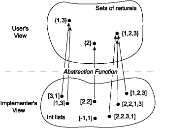
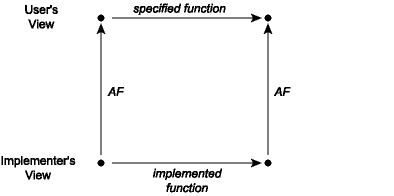
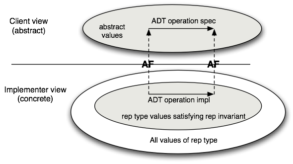

8.3. 模块文档#
模块提供的函数规范可以在其中找到 界面，这是客户将要咨询的内容。但是内部呢？ 文档，哪些与实施和维护模块的人相关？ 此类实施注释的目的是向读者解释如何 实现正确实现其接口。
Reminder
复制模块中的函数规范是不合适的 接口到模块实现中。复制存在引入的风险 随着程序的发展，不一致，因为程序员不保留副本 同步。复制代码和规范是主要来源（如果不是主要主要来源） 源）的程序错误。无论如何，实施者总是可以查看 规范的接口。
实施意见分为两类。第一类出现 因为模块实现可能会定义新的类型和函数 纯粹是模块内部的。如果它们的意义不明显，这些类型 和函数应该以与我们建议的风格大致相同的方式记录 用于记录接口。通常，随着代码的编写，它会变得显而易见 模块中定义的新类型和函数形成内部数据 抽象或至少是有意义的函数集合 模块本身。这是内部数据抽象的信号 可能会被移至单独的模块并仅通过其操作进行操纵。
第二类实施意见与使用相关
数据抽象。假设我们正在实现一组抽象
类型为 'a 的项目。界面可能看起来像这样：
(** A set is an unordered collection in which multiplicity is ignored. *)
module type Set = sig
(** ['a t] represents a set whose elements are of type ['a]. *)
type 'a t
(** [empty] is the set containing no elements. *)
val empty : 'a t
(** [mem x s] is whether [x] is a member of set [s]. *)
val mem : 'a -> 'a t -> bool
(** [add x s] is the set containing all the elements of [s]
as well as [x]. *)
val add : 'a -> 'a t -> 'a t
(** [rem x s] is the set containing all the elements of [s],
minus [x]. *)
val rem : 'a -> 'a t -> 'a t
(** [size s] is the cardinality of [s]. *)
val size: 'a t -> int
(** [union s1 s2] is the set containing all the elements that
are in either [s1] or [s2]. *)
val union: 'a t -> 'a t -> 'a t
(** [inter s1 s2] is the set containing all the elements that
are in both [s1] and [s2]. *)
val inter: 'a t -> 'a t -> 'a t
end
Show code cell output
module type Set =
sig
type 'a t
val empty : 'a t
val mem : 'a -> 'a t -> bool
val add : 'a -> 'a t -> 'a t
val rem : 'a -> 'a t -> 'a t
val size : 'a t -> int
val union : 'a t -> 'a t -> 'a t
val inter : 'a t -> 'a t -> 'a t
end
在集合的真实签名中，我们希望 map 和 fold 等操作为
好吧，但为了简单起见，我们暂时忽略这些。有很多方法可以
实现这个抽象。
正如我们之前所见，一种简单的方法是使用列表：
(** Implementation of sets as lists with duplicates. *)
module ListSet : Set = struct
type 'a t = 'a list
let empty = []
let mem = List.mem
let add = List.cons
let rem x = List.filter (( <> ) x)
let size lst = List.(lst |> sort_uniq Stdlib.compare |> length)
let union lst1 lst2 = lst1 @ lst2
let inter lst1 lst2 = List.filter (fun h -> mem h lst2) lst1
end
module ListSet : Set
这种实现方式的优点是简单。对于倾向于的小集合 没有重复的元素，这将是一个不错的选择。其性能将 对于大型集合或具有许多重复项的应用程序来说效果不佳，但对于某些 应用程序这不是问题。
请注意，函数的类型不需要写在 实施。不需要它们，因为它们已经存在于 签名，就像签名中不包含的规格一样 需要在结构中进行复制。
这是 Set 的另一个实现，它也使用 'a list 但需要
列表不包含重复项。这个实现也是正确的（并且
对于大集合也很慢）。请注意，我们使用相同的表示形式
类型，但实现的一些重要方面（add、size、
union) 是完全不同的。
(** Implementation of sets as lists without duplicates. *)
module UniqListSet : Set = struct
type 'a t = 'a list
let empty = []
let mem = List.mem
let add x lst = if mem x lst then lst else x :: lst
let rem x = List.filter (( <> ) x)
let size = List.length
let union lst1 lst2 = lst1 @ lst2 |> List.sort_uniq Stdlib.compare
let inter lst1 lst2 = List.filter (fun h -> mem h lst2) lst1
end
module UniqListSet : Set
我们引入函数规范编写的一个重要原因是
启用本地推理：一旦函数有了规范，我们就可以判断是否
该函数执行其应该执行的操作，而无需查看其余部分
程序。我们也可以不看就判断程序的其余部分是否有效
在函数的代码处。然而，我们无法在本地推理
刚刚给出的三个模块实现中的各个函数。问题
是我们没有足够的信息来了解两者之间的关系
具体类型 (int list) 和相应的抽象类型 (set)。这个
可以通过在注释中添加两种新的注释来解决信息缺乏的问题
实现：抽象函数和表示不变量
对于抽象数据类型。接下来我们将讨论这些内容。
8.3.1. 抽象函数#
任何 Set 实现的客户端不应该能够将其与
基于其函数行为的任何其他实现。就客户而言
可以看出，这些运算就像对集合的数学理想进行运算。
在第一个实现中，列表 [3; 1]、[1; 3] 和 [1; 1; 3] 是
对于实施者来说是可以区分的，但对于客户来说却是不可区分的。对于客户来说，他们
都代表抽象集合{1, 3}，并且不能通过任何一个来区分
Set 签名的操作。从客户的角度来看，
抽象数据类型描述了一组抽象值和关联的操作。
实现者知道这些抽象值是由具体的表示的
可能包含从客户的角度看不到的附加信息的值。
这种信息丢失由抽象函数描述，它是一个
从具体价值空间到抽象空间的映射。抽象
实现 ListSet 的函数如下所示：

请注意，多个具体值可能映射到单个抽象值；
也就是说，抽象函数可以是“多对一”。这也是
某些具体值可能不会映射到任何抽象值；的
抽象函数可能是部分。 ListSet 的情况并非如此，
但可能与其他实现有关。
抽象函数对于决定是否
实现是正确的，因此它属于
任何抽象数据类型的实现。例如，在 ListSet
模块中，我们可以将抽象函数记录如下：
module ListSet : Set = struct
(** Abstraction function: The list [[a1; ...; an]] represents the
set [{b1, ..., bm}], where [[b1; ...; bm]] is the same list as
[[a1; ...; an]] but with any duplicates removed. The empty list
[[]] represents the empty set [{}]. *)
type 'a t = 'a list
...
end
该评论明确指出该列表可能包含重复项，这 作为第一句话的强化很有帮助。同样，一个案例 为了清楚起见，明确提到了空列表，尽管有些人可能会认为它 变得多余。
第二种实现的抽象函数，不允许 重复，暗示了一个重要的区别。我们可以写出抽象 第二个表示的函数更简单一些，因为我们知道 这些元素是不同的。
module UniqListSet : Set = struct
(** Abstraction function: The list [[a1; ...; an]] represents the set
[{a1, ..., an}]. The empty list [[]] represents the empty set [{}]. *)
type 'a t = 'a list
...
end
8.3.2. 实现抽象函数#
实现 ListSet 的抽象函数意味着什么？我们会
想要一个接受 'a ListSet.t 类型输入的函数。但它应该是什么
输出类型是？抽象值是数学集，而不是 OCaml 类型。如果
我们假设有一个类型 'a set 我们的抽象函数可以
返回，开发 ListSet 就没有什么意义了；我们可以
我们刚刚使用了 'a set 类型，而没有做任何我们自己的工作。
另一方面，我们可能会实现一些接近抽象的东西
通过将 'a ListSet.t 类型的输入转换为内置 OCaml 类型来实现函数
或标准库类型：
我们可以转换为
string。这样做的好处是很容易 人类可以在顶层或调试输出中读取。 Java程序员使用toString()用于类似目的。我们可以转换为
'a list。 （实际上几乎没有什么转换 完成）。对于数据收集来说，这是一个方便的选择，因为列表可以 至少近似地代表许多数据结构：堆栈、队列、 字典、集合、堆等
以下函数实现了这些想法。 请注意 to_string 有
从客户端获取附加参数 string_of_val 进行转换
'a 至 string。
module ListSet : Set = struct
...
let uniq lst = List.sort_uniq Stdlib.compare lst
let to_string string_of_val lst =
let interior =
lst |> uniq |> List.map string_of_val |> String.concat ", "
in
"{" ^ interior ^ "}"
let to_list = uniq
end
安装自定义格式化程序，如中所述 section on encapsulation，也可以理解为实现 抽象函数。但在这种情况下，它只能由人类使用 以编程方式，顶层而不是其他代码。
8.3.3. 交换图#
使用抽象函数，我们现在可以讨论它对于 抽象的实现是正确的。准确地说，当 在具体空间中发生的每一个操作在映射时都有意义 由抽象函数进入抽象空间。这可以可视化为 交换图：

交换图意味着如果我们沿着图周围的两条路径，我们 必须到达同一个地方。假设我们从一个具体的值开始， 将某些操作的实际实现应用于它以获得新的具体 值或值。从抽象的角度来看，具体的结果应该是抽象的 值是应用函数 * 如其中所述的可能结果 规范*到实际输入的抽象视图。例如，考虑 将集合实现为具有重复列表的并集函数 上次介绍过的元素。当此函数应用于具体对时 [1； 3]，[2； 2]，它对应于图的左下角。 此操作的结果是列表 [2; 2； 1; 3]，其相应的摘要 值为集合 {1, 2, 3}。请注意，如果我们应用抽象函数 AF 到输入列表 [1; 3]和[2； 2]，我们有集合 {1, 3} 和 {2}。 在这种情况下，交换图要求 {1, 3} 和 {2} 的并集 是{1,2,3}，这当然是正确的。
8.3.4. 表示不变量#
抽象函数解释了如何查看模块内的信息
由模块客户端抽象地表示。但这并不是我们需要知道的全部内容，以确保
实施的正确性。考虑每个中的 size 函数
两个实现。对于允许重复的 ListSet，我们需要确保
不要重复计算重复元素：
let size lst = List.(lst |> sort_uniq Stdlib.compare |> length)
但对于 UniqListSet，其中列表没有重复项，大小只是
列表的长度：
let size = List.length
我们如何知道后者的实现是正确的？也就是说，我们怎么知道
“列表没有重复项”？模块的名称暗示了这一点，并且
它可以从 add 的实现中推断出来，但我们从未仔细观察过
记录下来。目前，代码并没有明确表示没有
重复。
在 UniqListSet 表示中，并非所有具体数据项都表示
抽象数据项。也就是说，抽象函数的域不
包括所有可能的列表。有一些列表，例如 [1; 1; 2]，
包含重复项，并且绝不能出现在集合的表示中
UniqListSet 实施；抽象函数在此类上未定义
列表。我们需要包含第二条信息，表示
不变（或rep不变，或RI），以确定哪些具体数据项
是抽象数据项的有效表示。对于表示为列表的集合
没有重复，我们将其与评论一起写为评论的一部分
抽象函数：
module UniqListSet : Set = struct
(** Abstraction function: the list [[a1; ...; an]] represents the set
[{a1, ..., an}]. The empty list [[]] represents the empty set [{}].
Representation invariant: the list contains no duplicates. *)
type 'a t = 'a list
...
end
如果我们从交换图的角度思考这个问题，我们会发现
确保正确性有一个关键属性：即
所有具体操作都保持表示不变。如果这个
约束被破坏，诸如 size 之类的函数将不会返回正确的
回答。表示不变量与表示不变量之间的关系
抽象函数如下图所示：

我们可以利用rep不变量和抽象函数来判断是否 单个操作的实现是正确的与其余操作隔离 模块中的函数。如果满足以下条件，则函数是正确的：
函数的前提条件保存参数值。
参数的具体表示满足表示不变量。
暗示这些条件：
创建的所有新表示值都满足表示不变量。
交换图成立。
代表不变式使得编写可证明正确的代码变得更容易，
因为这意味着我们不必编写适用于所有可能情况的代码
传入的具体表示—仅那些满足代表的
不变的。例如，在实现UniqListSet时，我们不关心什么
该代码对包含重复元素的列表执行操作。然而，我们确实需要
请注意，在返回时，我们只产生满足代表的值
不变的。如上图所示，如果代表不变量成立
输入值，那么它应该适用于输出值，这就是我们称之为的原因
一个不变量。
8.3.5. 实现表示不变量#
当实现复杂的抽象数据类型时，编写一个
内部函数，可用于检查代表不变式是否成立
给定的数据项。按照惯例，我们将此函数称为 rep_ok。如果
模块接受在模块外部创建的抽象类型的值，
比如说通过在签名中公开类型的实现，然后 rep_ok
应该应用于这些以确保满足表示不变量。
此外，如果实现创建了抽象类型的任何新值，
rep_ok 可以应用于它们作为健全性检查。通过这种方法，错误是
尽早发现，并且某个函数中的错误不太可能造成这种外观
另一个中的错误。
编写 rep_ok 的一种便捷方法是使其成为一个恒等函数，只需
如果表示不变量成立则返回输入值，如果满足则引发异常
失败。
(* Checks whether x satisfies the representation invariant. *)
let rep_ok x =
if (* check the RI holds of x *) then x else failwith "RI violated"
这是 Set 的实现，它使用与
UniqListSet，但包括大量的 rep_ok 检查。请注意 rep_ok 是
应用于所有输入集以及曾经创建的任何集。这确保了
如果创建了错误的集合表示，它将立即被检测到。万一
我们不知何故错过了对创建的检查，我们还将 rep_ok 应用于传入集
论据。如果存在错误，这些检查将帮助我们快速找出错误所在
代表不变量被打破。
(** Implementation of sets as lists without duplicates. *)
module UniqListSet : Set = struct
(** Abstraction function: The list [[a1; ...; an]] represents the
set [{a1, ..., an}]. The empty list [[]] represents the empty set [{}].
Representation invariant: the list contains no duplicates. *)
type 'a t = 'a list
let rep_ok lst =
let u = List.sort_uniq Stdlib.compare lst in
match List.compare_lengths lst u with 0 -> lst | _ -> failwith "RI"
let empty = []
let mem x lst = List.mem x (rep_ok lst)
let add x lst = rep_ok (if mem x (rep_ok lst) then lst else x :: lst)
let rem x lst = rep_ok (List.filter (( <> ) x) (rep_ok lst))
let size lst = List.length (rep_ok lst)
let union lst1 lst2 =
rep_ok
(List.fold_left
(fun u x -> if mem x lst2 then u else x :: u)
(rep_ok lst2) (rep_ok lst1))
let inter lst1 lst2 = rep_ok (List.filter (fun h -> mem h lst2) (rep_ok lst1))
end
module UniqListSet : Set
对每个参数调用 rep_ok 对于生产来说可能成本太高
程序的版本。例如，上面的 rep_ok 需要线性算术
时间，这破坏了所有先前恒定时间的效率或
线性时间运算。对于生产代码，使用
rep_ok 的版本仅检查代表不变量的部分
检查便宜。当要求没有运行时成本时，
rep_ok 可以更改为恒等函数（或宏），以便编译器
优化对它的调用。然而，最好保留
rep_ok 的完整代码，以便在将来的调试过程中可以轻松恢复它：
let rep_ok lst = lst
let rep_ok_expensive =
let u = List.sort_uniq Stdlib.compare lst in
match List.compare_lengths lst u with 0 -> lst | _ -> failwith "RI"
某些语言提供对条件编译的支持，它提供了
对编译代码库的某些部分但不编译其他部分的某种支持。
OCaml 编译器支持禁用断言检查的标志 noassert。
因此，你可以使用 assert 实现表示不变量检查，并将其关闭
与 noassert。问题是你的代码库的某些部分
可能需要断言检查才能正常工作。